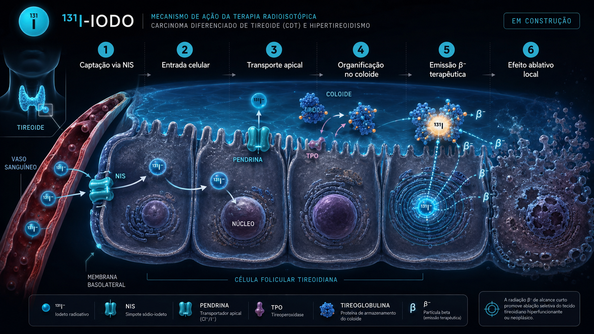

01 Cronologia
Do experimento pioneiro de Saul Hertz em 1941 ao paradigma atual de dose-individualizada por estratificação ATA: 85 anos de evolução de um radiofármaco que fundou a medicina nuclear terapêutica.
Karl Compton sugere uso terapêutico
Em palestra no Tremont Temple (Boston), o presidente do MIT Karl Compton sugere usar isótopos radioativos em medicina. Saul Hertz (Massachusetts General Hospital) e Arthur Roberts iniciam, com Robley Evans (MIT), os estudos com iodo radioativo.
Primeiro tratamento humano · Hertz, MGH
Hertz administra mistura de 130I/131I em paciente com Doença de Graves no Massachusetts General Hospital — o nascimento da medicina nuclear terapêutica. Paralelamente, Joseph G. Hamilton e John H. Lawrence faziam estudos análogos em Berkeley.
Seidlin, Marinelli, Oshry · CDT metastático
Caso emblemático publicado no JAMA: paciente com câncer diferenciado de tireoide metastático tratado com sucesso por iodo radioativo. Estabelece o paradigma terapêutico em CDT que persiste até hoje.
FDA aprova 131I-Iodeto de sódio
Primeiro radiofármaco aprovado pela Food and Drug Administration dos EUA — marco regulatório fundador da medicina nuclear. Disponibilizado comercialmente para hipertireoidismo e carcinoma diferenciado.
Benua, Leeper · dosimetria sangue/medula
Equipe do MSKCC formaliza o método dosimétrico de limite à medula vermelha (2 Gy) e à retenção pulmonar (≤80 mCi em 48h em metástases pulmonares difusas). Base de toda a dosimetria empírica e individualizada em CDT até hoje.
Consolidação como padrão
Décadas de experiência estabelecem regimes empíricos (30, 100, 150-200 mCi) em CDT. Mazzaferri (1994) publica séries históricas mostrando redução de recorrência e mortalidade em CDT tratado com RAI — sustentação da indicação universal pós-tireoidectomia.
Clonagem do NIS · Dai, Levy, Carrasco
Identificação molecular do sodium iodide symporter (SLC5A5/NIS) explica a captação seletiva do iodeto. Abre caminho para terapia gênica radioteranóstica com NIS exógeno em tumores não-tireoidianos.
rhTSH (Thyrogen) aprovado para ablação
FDA aprova tireotrofina alfa recombinante humana (rhTSH) para preparo da ablação com 131I em pacientes de baixo/intermediário risco — alternativa ao withdrawal de levotiroxina, evitando hipotireoidismo iatrogênico.
ESTIMABL e HiLo · low-dose em baixo risco
Dois RCTs publicados simultaneamente no NEJM (Schlumberger e Mallick, 2012) mostram não-inferioridade de 30 mCi vs 100 mCi e de rhTSH vs withdrawal em ablação de remanescentes em CDT de baixo risco. Mudam a prática global.
ATA Guidelines · revisão profunda (Haugen)
A American Thyroid Association reestrutura a estratificação (baixo / intermediário / alto), desencoraja ablação rotineira em microcarcinomas e formaliza a "response to therapy" como reclassificação dinâmica. RAI passa a ser adjuvante seletivo, não universal.
Era do CDT refratário a iodo
TKIs antiangiogênicos (lenvatinib · SELECT, sorafenib · DECISION) e drogas seletivas por driver (selpercatinib em RET+, larotrectinib em NTRK+) consolidam-se como linha pós-RAI em radioiodine-refractory DTC. Redesenha o algoritmo de doença metastática.
ESTIMABL2 · 30 mCi confirmado em baixo risco
Leboulleux e cols. (NEJM 2022) randomizam 776 pacientes de baixo risco entre 30 mCi+rhTSH e 100 mCi+rhTSH: resposta excelente equivalente (~95%) com toxicidade significativamente menor. Reforça definitivamente o low-dose como padrão.
MERAIODE · redifferentation
Estratégias de redifferentation com inibidores MAPK (trametinib + dabrafenib em BRAF-V600E; selumetinib em RAS) restauram captação de RAI em uma fração de CDT refratário, permitindo retratamento em pacientes antes sem opção radio-iodada.
ATA 2025 · revisão integral (Ringel, Sosa et al.)
Nova diretriz ATA para CDT em adultos (Thyroid 2025;35(8):841-985) — primeira revisão profunda desde 2015. Painel multidisciplinar com 20 especialistas (endo, cirurgia, patologia, medicina nuclear, oncologia, advocacia do paciente) e metodologia GRADE modificada. Eixos centrais: desescalada terapêutica em baixo risco (vigilância ativa formal para microcarcinoma; lobectomia ampliada; omissão de RAI confirmada pós-ESTIMABL2/IoN); terapia-alvo integrada (selpercatinib em RET+, dabrafenib+trametinib em BRAF-V600E, larotrectinib/entrectinib em NTRK+); redifferentation como estratégia formal em refratários selecionados; PROs (patient-reported outcomes) centrais à jornada do paciente; e gaps de pesquisa explicitamente apontados.
02 Mecanismo molecular
O iodeto não precisa de carreador molecular: o tireócito o capta avidamente pela proteína NIS (Na+/I− symporter, gene SLC5A5), faz organificação no colóide via TPO e o retém ligado à tireoglobulina. A emissão β⁻ do 131I causa quebras de dupla-fita no DNA das células-alvo.

Captação por NIS
O cotransportador Na+/I− (NIS · SLC5A5), expresso na membrana basolateral do tireócito, transporta ativamente 2 Na+ e 1 I− para o citosol — energizado pelo gradiente de sódio mantido pela Na+/K+-ATPase. Expressão regulada por TSH.
Efluxo apical via pendrina
O iodeto é eflupido para o colóide pela pendrina (SLC26A4) na membrana apical. Mutações em pendrina (síndrome de Pendred) causam bócio + surdez por falha desse passo.
Organificação pela TPO
A tireoperoxidase (TPO) oxida o iodeto e o incorpora a resíduos de tirosina da tireoglobulina, formando monoiodotirosina (MIT) e diiodotirosina (DIT). Acoplamento gera T3 e T4, armazenados no colóide.
Retenção prolongada
O iodo organificado permanece ligado à tireoglobulina por dias a semanas (T½ biológica ~80 dias no tireócito normal). Em tireócitos malignos diferenciados a retenção é menor, mas suficiente para terapia.
Emissão β⁻ terapêutica
O 131I emite partículas β⁻ (Emax 606 keV; alcance máximo ~2,4 mm; médio ~0,4 mm em tecido). A energia depositada provoca quebras de dupla-fita no DNA, estresse oxidativo e morte celular — efeito acentuado pelo cross-fire entre tireócitos vizinhos.
Emissão γ para imagem
O γ de 364 keV (81% de abundância) permite cintilografia de corpo inteiro (PCI/WBS) e SPECT/CT pós-terapia, característica que faz do 131I o protótipo teranóstico — terapia e imagem com o mesmo radionuclídeo.
O NIS não é exclusivo da tireoide: também é expresso em glândulas salivares, mucosa gástrica, mama em lactação, plexo coróide, glândulas lacrimais e túbulos renais (excreção). Essa biodistribuição explica a maior parte da toxicidade do 131I — sialoadenite, xerostomia, gastrite, obstrução naso-lacrimal (NLDO) e necessidade absoluta de evitar amamentação após terapia. Diferentemente do tireócito, esses tecidos não organificam o iodeto, mas a retenção transitória é suficiente para dano radioinduzido em doses altas.
A expressão de NIS, TPO e tireoglobulina cai progressivamente conforme aumenta a desdiferenciação. CDT bem-diferenciado (clássico) capta avidamente; variantes pouco diferenciadas, oncocíticas/Hürthle e o carcinoma poorly differentiated têm captação progressivamente menor. Carcinoma anaplásico e medular (origem parafolicular, sem NIS) não captam 131I e não têm indicação de RAI.
03 Indicações clínicas
Duas grandes famílias de indicação, com lógicas farmacológicas opostas: em CDT busca-se ablação/destruição tumoral; em hipertireoidismo busca-se destruição funcional do tireócito hiperativo. A dose, o preparo e o seguimento diferem profundamente entre os dois cenários.
Carcinoma diferenciado de tireoide
Após cirurgia inicial (lobectomia ou tireoidectomia total conforme estratificação ATA 2025) — papilífero, folicular e variantes diferenciadas. Três objetivos clinicamente distintos: (1) ablação de remanescente tireoidiano para facilitar seguimento por Tg; (2) terapia adjuvante de microdoença suspeita ou comprovada; (3) tratamento de doença persistente, recorrente ou metastática conhecida. Vigilância ativa é alternativa formal à cirurgia em microcarcinomas papilíferos de baixo risco selecionados (ATA 2025).
Hipertireoidismo persistente
Alternativa definitiva às drogas antitireoidianas e à cirurgia. Tratamento eletivo em Doença de Graves (autoimune, anti-TRAb+), bócio multinodular tóxico (Plummer) e adenoma autônomo (nódulo tóxico solitário). Custo-efetivo, ambulatorial e definitivo na maioria dos pacientes.
Absolutas: gestação e amamentação. Relativas / atenção: oftalmopatia de Graves moderada-grave ativa (risco de piora — considerar corticoide profilático ou cirurgia); incapacidade de cooperação com restrições de radioproteção; insuficiência renal grave (excreção lenta, maior dose corporal); incontinência urinária (radioproteção); doença psiquiátrica descompensada. Não-indicação: carcinoma medular e anaplásico de tireoide (não captam).
04 Esquema terapêutico · CDT
Após cirurgia (lobectomia ou tireoidectomia total, conforme estratificação) e classificação de risco ATA, a dose é definida pelo objetivo (ablação × adjuvância × doença macroscópica) e pelas características da doença. ATA 2025 consolida a tendência iniciada em 2015: menos é mais em baixo risco (com vigilância ativa formal e omissão de RAI), dose personalizada e terapia-alvo integrada em alto risco e refratário.
| Risco ATA | Critérios | Atividade típica | Indicação RAI |
|---|---|---|---|
| Baixo | Papilífero intratireoidiano, sem invasão extra-tireoidiana, sem M1, ≤5 LN+ micrometastáticos (<0,2 cm), Tg pós-op <1 ng/mL com TSH suprimido | 30 mCi (1,1 GBq) — quando indicado | Geralmente não recomendado; considerar em casos selecionados (Tg detectável, idade jovem, multifocalidade) |
| Intermediário | Invasão microscópica extra-tireoidiana, histologia agressiva (células altas, colunar, sólida), invasão vascular, >5 LN+ ou LN+ ≥0,2 cm, captação fora do leito no PCI pós-ablação | 30 a 100-150 mCi (1,1 a 5,5 GBq) | Considerar — terapia adjuvante seletiva conforme fator de risco predominante |
| Alto | Invasão macroscópica extra-tireoidiana, ressecção incompleta, metástase a distância, Tg pós-op >5-10 ng/mL com TSH suprimido, LN+ ≥3 cm | 100-200 mCi (3,7-7,4 GBq) ou dose por dosimetria individualizada | Recomendado — terapia adjuvante e/ou tratamento de doença conhecida |
| M1 / refratário-iodado pendente | Metástase pulmonar (difusa ou macronodular), óssea, cerebral, hepática com captação de iodo presumida ou comprovada | 150-200 mCi empírico, ou cálculo dosimétrico (Benua-Leeper, dosimetria lesional) | Recomendado enquanto persistir captação radio-iodada e benefício clínico |
Avaliação de resposta (ATA 2015 · mantida em 2025)
A revisão de 2025 mantém a arquitetura geral de 2015 e consolida tendências surgidas na última década. Pontos centrais:
- Vigilância ativa formalizada como opção legítima em microcarcinoma papilífero de baixo risco selecionado — desfecho oncológico equivalente à cirurgia em séries de Tóquio (Ito/Miyauchi), MSKCC e Kuma Hospital.
- Lobectomia ampliada como cirurgia inicial em DTC de baixo risco até 4 cm sem extensão extra-tireoidiana — paridade oncológica com tireoidectomia total e qualidade de vida superior.
- Desescalada de RAI reforçada em baixo risco — incorporando ESTIMABL2 (2022) e IoN (2024): omissão de ablação é opção válida; quando indicada, 30 mCi + rhTSH é o padrão.
- Terapia-alvo integrada formalmente: selpercatinib/pralsetinib em RET-fusion DTC e RET-mutado MTC; dabrafenib + trametinib em BRAF-V600E (CDT pouco-dif e ATC); larotrectinib/entrectinib em NTRK-fusion (raras em adulto, mais comuns em DTC pediátrico).
- Redifferentation com inibidores MAPK (trametinib, selumetinib, dabrafenib+trametinib) consolidada como estratégia para resgatar captação de RAI em refratários selecionados.
- PROs (patient-reported outcomes) e a "jornada do paciente" como eixo organizador da diretriz — inclusão de representante de pacientes no painel.
- NGS amplo em DTC iodo-refratário avançado para identificar drivers acionáveis (RET, BRAF, NTRK, ALK, RAS) antes de escolher TKI de primeira linha.
- Painel internacional · 20 especialistas · metodologia GRADE modificada · cut-off da literatura Jul/2024 (corrigendum em Out/2025 · PMID 41182278).
Quatro definições aceitas (qualquer uma basta): (1) ausência de captação na PCI pós-terapia em doença conhecida; (2) perda de captação prévia em retratamento; (3) captação presente em algumas lesões mas não em outras; (4) progressão estrutural em <12 meses pós-RAI apesar de captação. Dose cumulativa >600 mCi sem resposta também é considerada. Pacientes refratários têm OS mediana ~3-5 anos e são candidatos a TKI (lenvatinib, sorafenib) e drogas seletivas (selpercatinib, larotrectinib).
05 Esquema terapêutico · Hipertireoidismo
A dose pode ser calculada pela captação tireoidiana de iodo em 24h (RAIU-24h) e pelo volume glandular, ou administrada por regime fixo. Doença de Graves responde com doses menores; bócio multinodular tóxico é mais radio-resistente.
Cálculo dosimétrico por captação · Graves
Dose-alvo típica: 80 μCi/g (hipertireoidismo leve) · 120-200 μCi/g (Graves moderada-grave, BMN tóxico)
O 131I pode piorar a oftalmopatia ativa em ~15-30% dos pacientes (vs ~5% com tionamidas, ~5% com tireoidectomia). Fatores de risco: tabagismo ativo, oftalmopatia moderada-grave já presente, TRAb muito elevado, hipotireoidismo pós-tratamento mal corrigido. Profilaxia: prednisona 0,3-0,5 mg/kg/dia por 1 mês iniciada no dia da terapia, com desmame em 2-3 meses, em pacientes com oftalmopatia leve ativa ou fatores de risco. Em oftalmopatia moderada-grave ativa, evitar RAI — preferir tireoidectomia ou aguardar estabilização.
Persistência de hipertireoidismo após 6 meses ocorre em ~10-20% após primeira dose em Graves, mais em BMN tóxico (~20-30%). Retratamento pode ser feito a partir de 6 meses, geralmente com dose 1,5-2× maior que a inicial. Em bócios muito volumosos (>80-100 g) ou após múltiplas falhas, tireoidectomia é alternativa razoável.
06 Preparo do paciente
O preparo é cenário-específico. Em CDT, busca-se elevar TSH (estímulo NIS) e esvaziar o pool de iodo estável (dieta hipoiodada). Em hipertireoidismo, basta suspender tionamidas e contraste iodado.
Em CDT de baixo e intermediário risco, rhTSH é não-inferior ao withdrawal para ablação (HiLo, ESTIMABL, ESTIMABL2) com qualidade de vida significativamente melhor — é a recomendação ATA 2015. Em alto risco e doença conhecida, dados são menos robustos e muitos centros mantêm o withdrawal por gerar maior estímulo metabólico ao tireócito tumoral e maior captação lesional, embora rhTSH seja crescentemente usada conforme a literatura recente. Em doença metastática agressiva ou idosos com risco de descompensação cardíaca pelo hipotireoidismo, rhTSH é preferível.
07 Imagem teranóstica
A emissão γ de 364 keV permite que o mesmo radionuclídeo seja terapia e diagnóstico: é a essência do conceito teranóstico, do qual o 131I é o protótipo histórico. A imagem pós-dose terapêutica (PCI) é mandatória e frequentemente revela doença não vista no rastreio diagnóstico pré-terapia.
A cintilografia de corpo inteiro (post-therapy whole body scan) é mandatória após qualquer dose terapêutica de 131I em CDT — geralmente 5-7 dias pós-administração para permitir clearance de atividade fisiológica. SPECT/CT da região cervical e de áreas suspeitas é o padrão atual, permitindo localização anatômica precisa e diferenciação de focos fisiológicos (salivares, gástrico, intestinal, mamário em mulheres não-lactantes ocasionalmente). Achados patológicos típicos: foco residual em leito tireoidiano, LN cervicais, mediastinais, metástases pulmonares e ósseas. Fontes de falso-positivo: contaminação cutânea/vestes, secreções, divertículo de Zenker, dilatação esofágica, refluxo, cisto tireoglosso, hidronefrose, cistos ovarianos.
Conceito clássico de redução de captação lesional pelo 131I terapêutico após dose diagnóstica prévia de 131I (geralmente >5 mCi). Real, mas controverso quanto à magnitude e impacto clínico. Conduta prática: usar 123I para rastreio diagnóstico quando disponível; se usar 131I diagnóstico, manter dose ≤2 mCi e administrar a terapia em até 72h; em pacientes de alto risco, considerar omitir o diagnóstico pré e ir direto à dose empírica com PCI pós-terapia.
08 Ensaios pivotais
A evidência em CDT viveu três ondas: séries históricas observacionais (Mazzaferri, MSKCC) que sustentaram a indicação universal; RCTs de low-dose nos anos 2010 (HiLo, ESTIMABL) que redesenharam a dose no baixo risco; e a era atual de redifferentation e terapia-alvo no refratário.
Série histórica · 1.355 pacientes CDT · seguimento 16 anos
Pilar histórico da indicação universal de RAI pós-tireoidectomia em CDT >1-1,5 cm. Sustentou prática por 20 anos.
CDT baixo risco · n=438 · 2×2 fatorial: 30 vs 100 mCi × rhTSH vs withdrawal
Não-inferioridade dupla: 30 mCi não-inferior a 100 mCi; rhTSH não-inferior a withdrawal. Marco do low-dose.
CDT baixo risco · n=752 · 2×2 fatorial análogo
Confirmação independente (Schlumberger, França) do HiLo. Mudança definitiva da prática europeia.
CDT baixo risco · n=776 · "ausência de ablação" vs 30 mCi+rhTSH
Pilar da desescalada terapêutica em baixo risco. Justifica omitir ablação em casos selecionados.
CDT baixo risco · n=472 · 1,1 GBq+rhTSH vs sem RAI
Mais um pilar para evitar RAI em baixo risco — sem prejuízo a desfechos clínicos a 5 anos.
CDT refratário ao iodo · n=392 · lenvatinib vs placebo
Define lenvatinib como padrão pós-RAI em CDT refratário. Aborda o sucessor terapêutico do 131I.
CDT refratário · n=417 · sorafenib vs placebo
Primeiro TKI aprovado em CDT refratário. Toxicidade significativa (mão-pé, HTA, diarreia).
CDT refratário · trametinib+dabrafenib (BRAF) ou trametinib (RAS) · seguido de RAI
Prova de conceito de re-induzir captação radio-iodada em refratários por inibição MAPK. Estratégia em expansão.
Graves · n=443 · RAI ± prednisona vs MMI vs RAI sem corticoide
Pilar da prática atual de corticoide profilático com RAI em Graves com oftalmopatia leve ativa.
09 Dosimetria
Em CDT existem três abordagens: dose empírica (a mais usada — 30/100/150-200 mCi por estratificação ATA); dosimetria de sangue/medula (Benua-Leeper, MSKCC — limite de 2 Gy à medula); e dosimetria lesional (alvo ≥80 Gy ao tumor, alvo controverso). Em hipertireoidismo, dosimetria por captação e volume é padrão.
| Órgão / tecido | Dose por GBq (mGy/GBq) | Visualização | Limite / observação |
|---|---|---|---|
| Tireoide normal (remanescente) | 200.000 — 500.000 | alvo da ablação · >300 Gy efetivo | |
| Estômago (mucosa) | ~ 460 | gastrite radiação rara | |
| Glândulas salivares | ~ 220 | sialoadenite dose-dependente | |
| Medula óssea (vermelha) | ~ 70 | limite 2 Gy (Benua-Leeper) | |
| Bexiga (parede) | ~ 290 | hidratação reduz | |
| Cólon | ~ 100 | — | |
| Pulmão (sadio) | ~ 30 | ≤80 mCi retidos 48h em M1 difusa | |
| Ovários / testículos | ~ 40 / 30 | oligospermia transitória >200 mCi acumulados | |
| Corpo total | ~ 70 | limite cumulativo geral ~600 mCi (22 GBq) |
Dosimetria por sangue/medula desenvolvida no Memorial Sloan Kettering: contagem seriada de atividade total e atividade sanguínea após dose diagnóstica de 131I (geralmente 1-5 mCi). Calcula-se a dose que entrega 2 Gy ao sangue (surrogate de medula vermelha) e mantém retenção pulmonar ≤80 mCi em 48h em pacientes com M1 pulmonar difusa. Doses calculadas podem chegar a 300+ mCi por ciclo em pacientes selecionados — o limite é tóxico, não arbitrário. Aplicação principal: doença metastática volumosa, pulmonar difusa, idosos, pacientes pequenos, retratamento.
Trabalhos do grupo Maxon e estudos europeus sugerem correlação entre dose absorvida lesional ≥80 Gy (em remanescente) ou ≥30 Gy (em metástases) e resposta. Cálculo requer 124I-PET/CT pré-tratamento ou modelagem SPECT/CT seriada pós-terapia — fora da rotina da maioria dos centros. Hoje é mais ferramenta acadêmica e de centros teranósticos avançados do que parâmetro clínico cotidiano, mas tende a ganhar terreno conforme dosimetria SPECT/CT comercial amadurece.
10 Eventos adversos
A maior parte da toxicidade do 131I é leve e transitória. Sialoadenite e xerostomia são os efeitos crônicos mais frequentes em doses cumulativas altas; mielossupressão e fibrose pulmonar são limitantes em M1 volumosa; segunda neoplasia tem incidência baixa mas mensurável.
O NIS expresso nas glândulas salivares (sobretudo parótida) é responsável pela toxicidade salivar. Profilaxia: hidratação vigorosa, evitar sialogogos nas primeiras 24h (estimulam captação salivar), depois usar balas ácidas, limão e mastigação a cada 2-3h por 1-2 semanas. Massagem glandular e dieta hídrica. Manejo: sialoadenite aguda responde a AINEs e hidratação; xerostomia crônica é difícil — saliva artificial, pilocarpina oral 5 mg 3-4× dia, cuidado dental rigoroso (cárie por hipossalivação). Sialoendoscopia pode resolver obstruções ductais em casos selecionados.
Metanálises (Sawka, Rubino) mostram aumento modesto e dose-dependente do risco de leucemia, neoplasia GI (estômago, cólon), mama e bexiga após exposição cumulativa significativa (>100-150 mCi). Risco absoluto baixo — SIR 1,2-1,4 conforme cohort —, especialmente relevante em pacientes jovens com expectativa de vida longa e múltiplas doses. Justifica o paradigma atual de minimizar atividade cumulativa em baixo risco, individualizar dose em casos selecionados e usar PCI/SPECT para confirmar benefício antes de retratamento.
11 Radioproteção · CNEN e alta hospitalar
O 131I exige cuidados radioprotetivos específicos pela emissão γ de 364 keV (alto poder de penetração) e excreção urinária dominante. A regulação brasileira (CNEN NN 3.05) define limites para alta hospitalar e restrições pós-tratamento.
Não tem relação com a terapia rotineira — mas vale conhecer: KI é o profilático em acidentes nucleares com liberação de iodos radioativos ambientais (Chernobyl, Fukushima). Satura o NIS tireoidiano e bloqueia captação de iodos ambientais. Não é usado em pacientes em terapia com 131I, pois bloquearia também o radiofármaco.
12 Perspectivas: redifferentation, dosimetria, NIS exógeno
A pesquisa em 131I caminha por três fronteiras: redifferentation farmacológica para resgatar refratários, dosimetria SPECT/CT individualizada e terapia gênica com NIS exógeno em tumores extra-tireoidianos.
O paradigma da última década consolida-se na ATA 2025: menos RAI em baixo risco (ESTIMABL2, IoN — incluindo vigilância ativa formal em microcarcinoma e lobectomia ampliada) e mais RAI personalizado em alto risco, integrado a terapias-alvo, dosimetria individualizada e redifferentation seletiva. É um movimento de individualização — não de declínio do RAI. A despeito de TKIs e drogas seletivas dominarem o cenário refratário, o 131I permanece como a melhor primeira opção sistêmica em CDT diferenciado captante: barato, eficaz, com perfil de toxicidade bem caracterizado em 80 anos de uso.